STORYBRIDGE · 설계와 검증
혼합 부하의 저장 경합과 소켓 쓰기 최적화
방별 admission 분석, 단일 SELECT 조회와 소켓 쓰기 배치 적용 결과
500연결·250 SEND/s 혼합 부하에서 성공 저장은 약 80건/s였다. 인기 방의 저장 한 건은 400건의 전달 작업으로 이어지며, 100개 느린 연결에는 backlog가 누적됐다. 이때의 거절과 지연을 구분하기 위해 거절 원인을 분류하고 저장·전달·복구 단계별 비용을 계측했다.
짧은 저장 대기는 작은 방의 거절을 줄였지만 인기 방에서는 팬아웃과 지연을 늘려 채택하지 않았다. 단일 SELECT 조회·표현 재사용·소켓 쓰기 배치는 동일 복구량에서 서버와 MySQL의 CPU 비용을 줄였다. 다만 초당 45건으로 연결을 유지한 120초 시험은 3회 모두 기준을 충족한 반면, 별도의 600초 전체 재접속 시험에서는 일반 방 수신 p99가 336.54ms로 상한 250ms를 넘었다. 후속 분석에서는 재접속 중 어느 단계에서 수신이 늦어지는지 추적했다.
소켓 쓰기 배치까지 적용한 구현의 비교와 입력률별 검증 결과다. 이후 초기 구독·브라우저 재접속 정책 변경은 별도로 비교했다. 최종 구현의 비교 결과
방별 입력률과 팬아웃량
혼합 부하의 80%는 400 개 수신 연결이 있는 방 999 로,20%는 31 개 정상 방으로 들어간다. 정상 수신자는 100 개 수신 연결이며 방마다 3~4 명이다. 따라서 예정 전달량은 인기 방 200×400=80,000 건/s, 정상 방 약50×100/31=161.3 건/s다. 이처럼 이 시험의 250 SEND/s를 해석하려면 방별 수신자 수까지 함께 봐야 한다.
인기 방 중 100 개 수신 연결의 수신기는 첫 구간에 40ms마다 한 건씩 적용하므로 최대 25 건/s다. 인기 방 메시지가 초당 200건 모두 저장되고 느린 연결 100개가 각각 초당 25건씩 적용하면, 이 연결들의 미처리 수신 건수는 합계 초당 17,500건씩 늘어난다. 실제 증가량은 저장·수신 건수로 따로 측정했다. 아래 표는 측정 구간에 실제 저장된 메시지와 사전 수신 의무를 곱한 값이다.
| 후보 / 반복 | 응답 성공 저장 인기 방 / normal (건/s) | DB 저장의 예정 전달 인기 방 / normal (건/s) | 측정 중 실제 수신 인기 방 / normal (건/s) | DB 원본 |
|---|---|---|---|---|
| 수신 버퍼 개선 #1 | 33.8 / 45.0 | 13513 / 145.2 | 13628 / 145.2 | 수신 버퍼 개선 / 혼합 250 건/초 · 60 초 / 반복 1 |
| 수신 버퍼 개선 #2 | 34.8 / 45.5 | 13920 / 146.8 | 14089 / 146.9 | 수신 버퍼 개선 / 혼합 250 건/초 · 60 초 / 반복 2 |
| 수신 버퍼 개선 #3 | 36.5 / 46.0 | 14613 / 148.3 | 14766 / 148.4 | 수신 버퍼 개선 / 혼합 250 건/초 · 60 초 / 반복 3 |
| 수신 버퍼 개선·단계 계측 #1 | 39.4 / 46.2 | 15773 / 149.0 | 15937 / 149.1 | 수신 버퍼 개선·단계 계측 / 혼합 250 건/초 · 60 초 / 반복 1 |
| 수신 버퍼 개선·단계 계측 #2 | 31.4 / 43.5 | 12553 / 140.4 | 12630 / 140.5 | 수신 버퍼 개선·단계 계측 / 혼합 250 건/초 · 60 초 / 반복 2 |
| 수신 버퍼 개선·단계 계측 #3 | 36.1 / 45.6 | 14460 / 147.3 | 14644 / 147.5 | 수신 버퍼 개선·단계 계측 / 혼합 250 건/초 · 60 초 / 반복 3 |
| 소켓 쓰기 배치 #1 | 37.2 / 45.1 | 14893 / 145.7 | 15097 / 145.9 | 소켓 쓰기 배치 / 혼합 250 건/초 · 60 초 / 반복 1 |
| 소켓 쓰기 배치 #2 | 38.2 / 44.9 | 15273 / 144.9 | 15423 / 145.1 | 소켓 쓰기 배치 / 혼합 250 건/초 · 60 초 / 반복 2 |
| 소켓 쓰기 배치 #3 | 41.2 / 46.8 | 16487 / 150.8 | 16704 / 150.5 | 소켓 쓰기 배치 / 혼합 250 건/초 · 60 초 / 반복 3 |
좁은 화면에서는 표를 좌우로 이동할 수 있습니다. 수치와 단위는 원본의 반복별 값을 유지했습니다.
| 반복 | 관측 구간 초(k6 시작 기준) | 인기 방 저장/s | slow 연결당 실제 수신/s | slow100 개 수신 연결 backlog 증가/s |
|---|---|---|---|---|
| 수신 버퍼 개선 #1 | 22.4–39.9 | 30.15 | 15.45 | 1469 |
| 수신 버퍼 개선 #2 | 22.6–39.7 | 32.45 | 17.42 | 1503 |
| 수신 버퍼 개선 #3 | 22.1–39.3 | 32.21 | 17.48 | 1473 |
| 수신 버퍼 개선·단계 계측 #1 | 21.8–39.0 | 38.03 | 18.08 | 1995 |
| 수신 버퍼 개선·단계 계측 #2 | 23.1–35.0 | 25.34 | 15.16 | 1018 |
| 수신 버퍼 개선·단계 계측 #3 | 22.3–39.7 | 32.60 | 17.50 | 1510 |
| 소켓 쓰기 배치 #1 | 22.2–39.5 | 31.19 | 17.03 | 1416 |
| 소켓 쓰기 배치 #2 | 22.5–39.7 | 35.25 | 17.37 | 1789 |
| 소켓 쓰기 배치 #3 | 22.4–39.2 | 38.87 | 18.47 | 2039 |
좁은 화면에서는 표를 좌우로 이동할 수 있습니다. 수치와 단위는 원본의 반복별 값을 유지했습니다.
40ms timer가 보장하는 것은 최대 25 건/s의 처리 속도이며, 이벤트 루프·호스트 경합·실제 데이터 도착에 따라 관측 속도는 더 낮아질 수 있다. 따라서 계산에는 설정값 25 대신 관측한 수신률을 사용했다. 여기서 k6 의 적용은 메모리 cursor이며 영속 로컬 commit 성능이 아니다. slow 해제 뒤의 복구 성공은 별도 시점과 고정 기한으로 확인한다.
DB 저장량은 응답이 유실된 commit도 포함할 수 있어 응답 성공과 별개다. 측정 중 실제 수신은 이전 warmup backlog를 포함하고 측정 말미의 메시지는 이후에 도착할 수 있으므로 두 열이 같아야 하는 것은 아니다. 종료 원장에서는 모든 저장 의무를 다시 대조한다. 느린 cohort의 실제 속도·backlog 변화는 5 초마다 기록한 수신 cursor와 DB head로 계산했다. 비동기 표본이므로 최대 한 보고 주기 정도의 시차가 있고, 원자적인 전역 snapshot이라고 부르지 않는다.
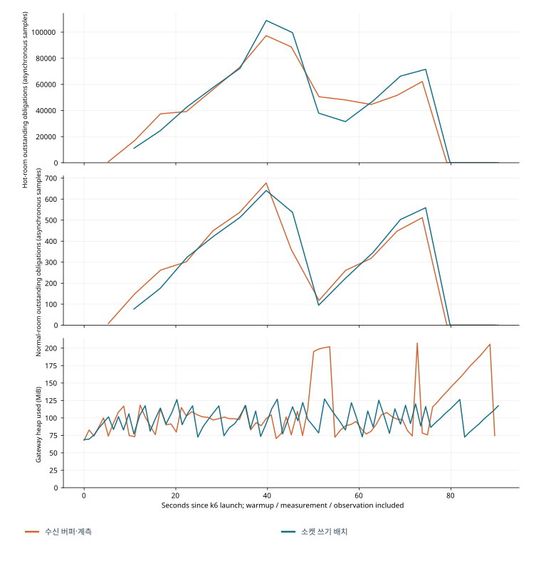
거절 사유와 SEND 미확정 추적
수신 버퍼 개선·단계 계측의 첫 진단에서는 인기 방 ROOM_BUSY가 대부분이었고 전체 WRITE_BUDGET은 일부였다. 이 배치에서 방 999 의stripe228 은 정상 방 1~31 과 겹치지 않으므로 stripe 충돌로 설명할 수 없다. outbox 포화와 읽기 예산 거절도 별도 카운터에 남겼다. 방별 gate는 commit 전체를 보호하며 즉시 거절한다. 대기열만 늘리면 더 많은 요청을 기다리게 할 뿐이고, 인기 방 저장을 늘릴 때마다 400 개의 전달 의무가 추가된다.
| 반복 | 인기 방 ROOM_BUSY | owner 갱신 경계 | stripe 충돌 | 쓰기 예산 | outbox 포화 | 서버 원본 |
|---|---|---|---|---|---|---|
| 수신 버퍼 개선·단계 계측 #1 | 9571 | 40 | 0 | 246 | 0 | 수신 버퍼 개선·단계 계측 / 혼합 250 건/초 · 60 초 / 반복 1 |
| 수신 버퍼 개선·단계 계측 #2 | 10057 | 31 | 0 | 419 | 0 | 수신 버퍼 개선·단계 계측 / 혼합 250 건/초 · 60 초 / 반복 2 |
| 수신 버퍼 개선·단계 계측 #3 | 9789 | 26 | 0 | 278 | 0 | 수신 버퍼 개선·단계 계측 / 혼합 250 건/초 · 60 초 / 반복 3 |
| 소켓 쓰기 배치 #1 | 9674 | 51 | 0 | 332 | 0 | 소켓 쓰기 배치 / 혼합 250 건/초 · 60 초 / 반복 1 |
| 소켓 쓰기 배치 #2 | 9663 | 42 | 0 | 309 | 0 | 소켓 쓰기 배치 / 혼합 250 건/초 · 60 초 / 반복 2 |
| 소켓 쓰기 배치 #3 | 9484 | 16 | 0 | 219 | 0 | 소켓 쓰기 배치 / 혼합 250 건/초 · 60 초 / 반복 3 |
좁은 화면에서는 표를 좌우로 이동할 수 있습니다. 수치와 단위는 원본의 반복별 값을 유지했습니다.
인기 방 입력 간격은 평균 5ms인데 gate는 트랜잭션 종료까지 수십ms 동안 유지되므로, 그 사이 들어온 같은 방 SEND는 즉시 거절된다. 이는 관측된 거절을 설명하는 직접 경계이며, 곧바로 MySQL의 물리 처리 한계라는 뜻은 아니다. 반대로 gate를 풀거나 worker를 늘리는 것만으로 400 배의 전달 의무가 사라지지도 않는다. 이번에는 gate·쓰기 permit을 그대로 두고 공유 읽기의 불필요한 왕복과 전송 등록 비용을 줄였다. 짧은 저장 batch는 commit당 비용을 줄일 가능성이 있지만 수락 증가에 따른 팬아웃·tail·멱등 receipt 경계를 별도로 입증해야 하는 후속 가설로 남긴다. 구현하지 않은 batch를 실패한 실험으로 쓰지 않는다.
소규모 방의 유한 저장 대기 실험
다수 고유 사용자의 round-robin 순서는 같은 방 사용자들의 SEND를 4ms 간격으로 인접시키는 방식으로, Poisson 입력과는 다르다. 소켓 쓰기 배치의 한 반복은 서버 약 2 코어 사용 중에도 ROOM_BUSY2216 건, WRITE_BUDGET0 건이었다. 총용량 부족과 짧은 commit 인계 경합을 구분하기 위해 유한 저장 대기를 실제 구현했다.
유한 저장 대기는 stripe당 대기자 1 명, 전역 64 명, 요청 parking 기한 4ms만 허용한다. 성공은 여전히 commit 이후의 기존 STORED다. OS 스케줄 지연까지 4ms 안에 끝난다는 보장은 없으며 실제 대기 최대값도 기록했다. 쓰기 permit6 개, roomSeq·멱등·전달 credit와 queue 한도는 그대로다.
- 작은 방의 30 초 pilot에서 소켓 쓰기 배치→유한 저장 대기 성공 저장 204.8→238.53/s, 정상p99 52→69ms, STORED p99 15→25ms, 서버 CPU220.6→280.5%였다. 총용량이 남아 있어도 즉시 gate 거절이 발생한다는 가설을 지지하지만 지연과 CPU 사용량도 증가했다.
- 같은 혼합 pilot에서 성공 저장 80.33→82.97/s, 정상 방 p99 298→323ms, STORED p99 203.91→210ms였다. 인기 방 성공 1075→1161 건, normal1335→1328 건으로 추가 수락은 주로 400 배 팬아웃을 만든다. 양쪽 목표 미달은 그대로 남긴다.
- 혼합에서 실제 wait 평균 7.22ms·최대 150.38ms였다. 4ms는 요청 parking timeout이며 OS가 해당 thread를 즉시 실행한다는 보장이 아니다. 대기자·쓰기·credit 상한은 유지됐고 최종 미확정·수신 미완료 0 이지만, 혼합 부하의 지연이 더 길어져 기본 설정에는 넣지 않았다.
- 작은 방에는 별도 정책으로 검토할 수 있지만, 혼합 부하에서 얻은 개선은 아니다. 30 초 pilot은 방향 판별이며 통계적으로 확정한 보편적 성능 차이가 아니다. 추가 파라미터를 계속 늘리는 대신 소켓 쓰기 배치의 비용 개선과 한계를 최종 반복으로 평가한다.
| pilot / 조건 | 저장/s | STORED / 정상 방 p99 ms | 서버 CPU | 최종 미완료 | 원본 |
|---|---|---|---|---|---|
| 소켓 쓰기 배치 / 다수 고유 사용자 | 204.80 | 15.0 / 52.0 | 220.6% | 0 | 소켓 쓰기 배치 / 고유 사용자 다수 250 건/초 · 30 초 / 탐색·진단 |
| 소켓 쓰기 배치 / 인기·일반 혼합 | 80.33 | 203.9 / 298.0 | 575.0% | 0 | 소켓 쓰기 배치 / 혼합 250 건/초 · 30 초 / 탐색·진단 |
| 유한 저장 대기 / 다수 고유 사용자 | 238.53 | 25.0 / 69.0 | 280.5% | 0 | 유한 저장 대기 / 고유 사용자 다수 250 건/초 · 30 초 / 탐색·진단 |
| 유한 저장 대기 / 인기·일반 혼합 | 82.97 | 210.0 / 323.0 | 571.6% | 0 | 유한 저장 대기 / 혼합 250 건/초 · 30 초 / 탐색·진단 |
좁은 화면에서는 표를 좌우로 이동할 수 있습니다. 수치와 단위는 원본의 반복별 값을 유지했습니다.
판단·코드·시험 연결. 30 초 pilot은 방향 판별용이며 독립 3 회 본 비교로 부풀리지 않는다. 실제 held commit 경쟁 시험은 24 건의 timeout/명시적 거절 뒤 숨은 receipt0, 동일 키 재시도의 정확한 24 개 저장을 확인했다.
발생기 보완은 서버 개선과 구분했다. 이전 시험에서는 측정 중 요청 99건을 시작하지 못했다. 이번 64 VU 진단의 132건과 첫 512 VU 고율 시험의 176건은 모두 워밍업 중 발생했다. 고율 시험에서 k6 메모리 최대 662MiB와 호스트 가용 메모리 최소 6,138MiB를 확인한 뒤, 초당 1,000건 비교는 양쪽 모두 1,024 VU로 맞췄다. 초당 250건은 512 VU를 유지했다. 기존 512 VU 고율 시험 두 회는 상세 표에 남겼지만 최종 고율 비교에는 포함하지 않았다. drop이 0이어도 목표 도착량과 실제 시도 수의 차이, 연결 거절, SEND 미확정은 따로 집계했다.
원래 VU64 를 재현한 trace 실행은 최종 미확정 24 건이었다. 모두 첫 POST가 TCP reset(error1220)이었고,22 건은 결과 404→같은 키 재전송 429→결과 404,2 건은 결과 조회 429 로 끝났다. 종료 receipt는 24 건 모두 없었고 hash 불일치도 없었다. 사후 부재 확인을 당시 확정 거절로 소급하지 않았다.
Tomcat10.1.55 의 기본 keep-alive100 회 종료와 기존 SO_LINGER0 가 정상 HTTP 응답까지 reset시키는 경계를 확인했다. 횟수 종료를 없앤 대조 실행은 초기·최종 미확정 0 이었다. idle3 초, 유한 연결 수, blocked WebSocket write 종료는 유지하고 공통 수정은 기준 구현과 비교군에 적용했다. 기준 구현은 이 공통 수정이며 개선 SQL·fanout 코드는 포함하지 않는다.
부하 발생기가 시작하지 못한 요청 132건은 모두 워밍업 중에 발생했다. TCP reset에 따른 SEND 미확정은 측정 중 발생했으므로 두 현상을 같은 원인으로 묶지 않았다. 512 VU로 시작 구간의 동시 요청 여유를 확보한 반복과, 앞선 측정 중 요청 99건을 시작하지 못한 실패 결과를 함께 남겼다. 최종 비교에서도 목표 도착량·실제 시도·발생 지연·drop·재시도·거절·미확정·전달 미완료를 각각 집계했다.
단일 SELECT 적용과 단계별 지연
처음 계측한 공유 본문 조회는 평균 5.81ms, callback은 그보다 작았다. 원래 RR 경로는 권한→head/floor→본문 SELECT뿐 아니라 isolation 조회·설정, read-only 전환, autocommit, commit 왕복을 동반했다. 수신 버퍼·계측 진단의 MySQL digest에는 COMMIT20,597 회와 autocommit41,204 회가 남았다. 누적 statement 시간은 병렬 작업의 wall time 합계이며 순수 CPU나 fsync 시간으로 읽지 않는다.
단일 SELECT 복구는 권한·floor·head·본문을 하나의 InnoDB consistent SELECT에서 가져온다. head만 필요한 요청은 message JOIN 자체를 생략하고, 본문 조회는(room_id,seq) 범위를 최대 64 행으로 제한한다. 실제 EXPLAIN ANALYZE는 primary range32 행·반환 32 행을 확인했다. 조회 직후 retention이 진행되는 barrier 시험에서도 이미 얻은 16 행의 로컬 원자 적용과 다음 페이지의 RESYNC_REQUIRED를 확인했다.
정확한 후보 소스 · Store.batchHistory
Page batchHistory(Auth.Identity first,long room,long after,long end) {
return permit(reads,()->{
first.check();
// One InnoDB consistent SELECT owns permission, F, H and bodies together.
// No cached head or separate READ COMMITTED metadata SELECT is involved.
String meta="SELECT r.head,r.floor_seq";
String authorized=" FROM room r JOIN membership a ON a.room_id=r.id AND a.user_id=?";
String query=end==0?meta+authorized+" WHERE r.id=?":
meta+",m.*"+authorized+" LEFT JOIN message m ON m.room_id=r.id AND m.seq>GREATEST(?,r.floor_seq-1) AND m.seq<=LEAST(?,r.head) WHERE r.id=? ORDER BY m.seq LIMIT 64";
Object[] args=end==0?new Object[]{first.user(),room}:new Object[]{first.user(),after,end,room};
Page page=jdbc.query(query,rs->{
if(!rs.next())throw new Fault("FORBIDDEN",403);
long head=rs.getLong("head"),floor=rs.getLong("floor_seq");
var messages=new java.util.ArrayList<Message>();
if(end!=0)do{if(rs.getObject("seq")!=null)messages.add(MESSAGE.mapRow(rs,0));}while(rs.next());
return new Page(room,floor,head,Math.min(head,end),Math.max(after,floor-1),List.copyOf(messages));
},args);
// Hook now pauses after the complete statement snapshot, before callbacks.
hooks.hit("batch.after_statement");
hooks.hit("history.after_head");first.check();
long base=page.base();var messages=page.messages();
long expected=base+1;for(Message m:messages)if(m.seq()!=expected++)throw new Fault("LOG_GAP",503);
metrics.inc("history_queries");metrics.add("history_rows",messages.size());return page;
});
}
단일 SELECT 복구의 첫 pilot은 본문 조회 5.81→1.79ms로 줄었지만 정상 방p99 는 226→276ms, 성공 저장은 3,090→2,814 건/30 초였다. 조회는 빨라졌지만 일반 방의 수신 지연은 오히려 늘었다. 직렬화 prefix 재사용은 구독 prefix와 불변 본문의 UTF-8 길이를 재사용했으나 단독 혼합 지연 개선의 증거는 부족했다. JDBC parse cache는 QueryInfo 표본을 줄였어도 전체 지연을 개선하지 못했고, 초기 heap768MiB는 GC를 줄이는 대신 RSS를 늘렸으므로 최종 공통 설정에 넣지 않았다. 이 pilot들은 한 번의 경로 판별이며 최종 독립 반복과 구분한다.
같은 실행의 단계별 비용
| 반복 | 인기 방 gate 보유 | 정상 본문 공유 대기 | 정상 본문 DB 실행 | 정상 본문 callback | writer 큐 대기(1/64 표본) |
|---|---|---|---|---|---|
| 수신 버퍼 개선·단계 계측 #1 | 17.57 | 69.60 | 7.73 | 0.05 | 14.57 |
| 수신 버퍼 개선·단계 계측 #2 | 25.45 | 76.97 | 9.08 | 0.09 | 22.06 |
| 수신 버퍼 개선·단계 계측 #3 | 21.00 | 56.95 | 9.19 | 0.09 | 18.16 |
| 소켓 쓰기 배치 #1 | 20.64 | 28.90 | 1.99 | 0.10 | 6.43 |
| 소켓 쓰기 배치 #2 | 20.56 | 24.64 | 2.46 | 0.08 | 8.02 |
| 소켓 쓰기 배치 #3 | 18.76 | 33.32 | 2.76 | 0.09 | 5.01 |
좁은 화면에서는 표를 좌우로 이동할 수 있습니다. 수치와 단위는 원본의 반복별 값을 유지했습니다.
단위는 ms이며 전체 실행의 단계별 평균이다. 서로 다른 요청·병렬 작업의 평균을 더해서 end-to-end p99 로 만들지 않는다. callback에는 적용·등록 작업이 포함되지만 실제 socket flush는 writer가 별도로 수행한다. DB 실행에는 서버 실행뿐 아니라 드라이버 왕복·스케줄 대기도 들어간다. SQL digest·JFR·자원 시계열을 함께 봐야 하며, 평균만으로 tail 원인을 확정하지 않는다.
실제 JFR sampled stack과 MySQL digest를 수신 버퍼·단계 계측, 단일 SELECT, 직렬화 prefix 재사용, 소켓 쓰기 배치에서 대조했다. Tomcat poller·문자열/Map·JDBC SQL 파싱 등이 관측됐다. 표본 개수는 정확한 CPU 비율이 아니며, 관찰 시간이 다른 탐색의 원시 표본 수를 직접 비교하지 않는다. Windows process I/O 카운터도 파일·네트워크를 합치므로 순수 TCP syscall 수로 해석하지 않는다.
대기 중인 프레임의 소켓 쓰기 배치
소켓 쓰기 배치는 frame이 모일 때까지 기다리는 timer 없이 writer가 이미 가진 큐에서 최대 8 개 frame만 꺼낸다. 구독 epoch가 들어간 개별 JSON과 WebSocket frame 순서는 유지하고, singleton control도 즉시 flush한다. Tomcat이 원래 연결마다 갖고 있던 8KiB outputBuffer를 표준 Jakarta batching API로 사용한다. 애플리케이션 queue·window·global credit를 늘리지 않았고 controlBytes도 flush까지 잡고 있다.
buffered send 반환은 실제 flush와 다르고, flush 반환 역시 클라이언트 로컬 commit이 아니다. credit는 APPLIED/CLOSE_ACK 또는 실제 종료 경계에서만 반환한다. 실패한 batch의 전송 완료를 추측하지 않고 같은 cursor의 로그 복구로 돌아간다. blocking flush는 peer monitor 밖에서 실행하고 기존 write timeout·별도 close와 실제 TCP 회수 시험을 적용했다.
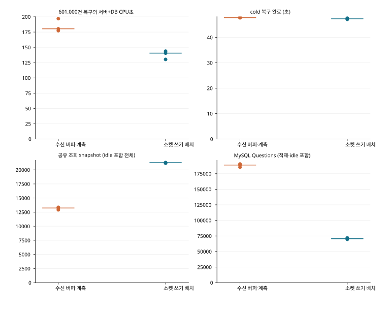
메시지 1,810건을 미리 저장하고, 각 메시지를 받아야 하는 연결별로 합산한 601,000건을 복구했다. 인기 방 1,500건과 일반 방 31개에 각 10건을 k6 HTTP로 저장한 뒤 500개 연결이 수신하는 시험이다. 복구 중 신규 SEND는 없었고, 느린 연결 100개의 적용 제한은 45초에 해제했다. 입력 hash, DB의 message·receipt·outbox, 실제 수신 의무를 대조했다. 전후 각 3회 측정에서 서버와 MySQL의 합산 CPU 시간 중앙값은 180.34초에서 140.52초로 약 22% 줄었다. 수락량 차이 없이 같은 복구 작업의 비용을 비교한 결과이며, 신규 송신이 계속 유입되는 조건의 성능을 대신하지 않는다.
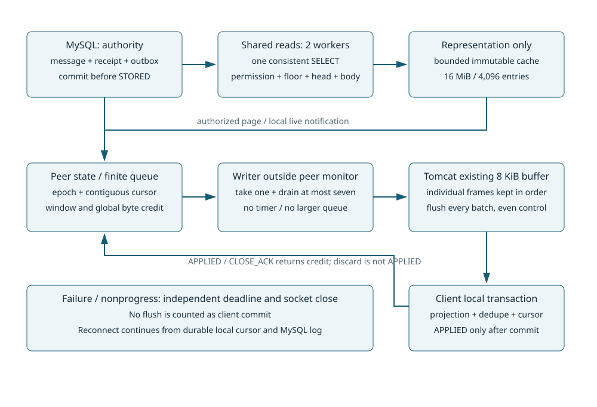
| 후보 / 반복 | 완료 초 | gateway / MySQL / k6 CPU초 | 공유 snapshot 수 | 서버 최대 RSS MiB | 입력·DB 독립 감사 |
|---|---|---|---|---|---|
| 수신 버퍼 개선·단계 계측 #1 | 47.75 | 145.81 / 31.44 / 233.48 | 13231 | 825.1 | 수신 버퍼 개선·단계 계측 / 혼합 0 건/초 · 60 초 / 반복 1 |
| 수신 버퍼 개선·단계 계측 #2 | 48.12 | 162.50 / 34.42 / 262.37 | 13355 | 841.6 | 수신 버퍼 개선·단계 계측 / 혼합 0 건/초 · 60 초 / 반복 2 |
| 수신 버퍼 개선·단계 계측 #3 | 47.73 | 149.46 / 30.88 / 248.21 | 12909 | 826.8 | 수신 버퍼 개선·단계 계측 / 혼합 0 건/초 · 60 초 / 반복 3 |
| 소켓 쓰기 배치 #1 | 47.55 | 119.20 / 24.51 / 247.45 | 21271 | 860.9 | 소켓 쓰기 배치 / 혼합 0 건/초 · 60 초 / 반복 1 |
| 소켓 쓰기 배치 #2 | 47.31 | 116.97 / 23.55 / 235.32 | 21283 | 808.3 | 소켓 쓰기 배치 / 혼합 0 건/초 · 60 초 / 반복 2 |
| 소켓 쓰기 배치 #3 | 47.10 | 108.11 / 22.14 / 222.97 | 21180 | 808.5 | 소켓 쓰기 배치 / 혼합 0 건/초 · 60 초 / 반복 3 |
좁은 화면에서는 표를 좌우로 이동할 수 있습니다. 수치와 단위는 원본의 반복별 값을 유지했습니다.
| 반복 | MySQL Questions(실행 전체) | MySQL 송신/수신 MiB | 계측 frame / flush batch |
|---|---|---|---|
| 수신 버퍼 개선·단계 계측 #1 | 188930 | 129.9 / 12.2 | 685867 / frame별 기존 전송 |
| 수신 버퍼 개선·단계 계측 #2 | 190560 | 125.8 / 12.3 | 685344 / frame별 기존 전송 |
| 수신 버퍼 개선·단계 계측 #3 | 185397 | 122.7 / 12.0 | 685575 / frame별 기존 전송 |
| 소켓 쓰기 배치 #1 | 69587 | 202.5 / 10.2 | 686763 / 203668 |
| 소켓 쓰기 배치 #2 | 70587 | 203.5 / 10.3 | 686833 / 204859 |
| 소켓 쓰기 배치 #3 | 71935 | 199.5 / 10.4 | 687450 / 208022 |
좁은 화면에서는 표를 좌우로 이동할 수 있습니다. 수치와 단위는 원본의 반복별 값을 유지했습니다.
snapshot 수와 최대 RSS는 warmup·완료 뒤 idle을 포함한 실행 범위 또는 측정 창의 지표로, CPU 적분 창과 동일하지 않다. 더 빠른 worker는 요청을 기다려 병합하는 기회를 줄일 수 있으므로, 논리 snapshot 수가 증가하더라도 트랜잭션 설정 왕복과 DB CPU가 감소할 수 있다. 쿼리 수뿐 아니라 동일 수신 의무를 처리한 CPU 비용도 함께 비교했다.
500명 고유 사용자의 소규모 방 시험
다수 고유 사용자 조건은 서로 다른 500 사용자를 125 개의 1:1 방과 63 개의 소규모 방에 배치하되, 소규모 방 중 마지막 방은 2 명, 나머지는 4 명으로 구성한다. 각 사용자에 균등하게 송신하므로 250 SEND/s의 예정 전달량은 748 건/s다. 목록 조회는 500 개의 서로 다른 사용자 키이고, 공유 읽기는 2~4 명의 방 안에서만 가능하다. 기존 31 사용자(ID2~32)의 다중 탭과 같은 cursor 병합에만 유리한 결과인지 이 조건으로 분리했다. 인기 방 80,000 건/s와 동일한 전달 부하라고 주장하지 않는다.
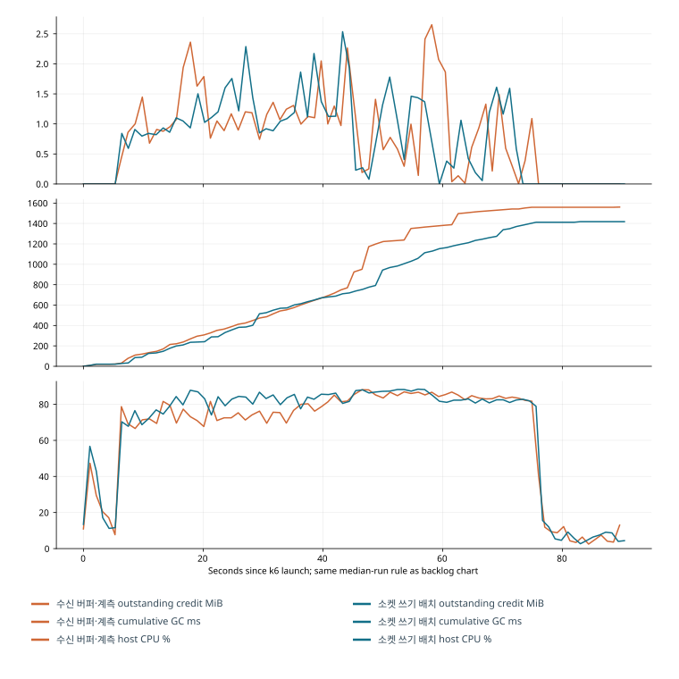
장애 회귀와 지속 부하 결과
- 최종 주 비교: 수신 버퍼 개선 혼합 3 회, 수신 버퍼 개선·단계 계측/소켓 쓰기 배치 각각 혼합 250/s·500 고유사용자 250/s·분산 방 1000/s 각 3 회. 워밍업 15 초 뒤 60 초 측정. 새 고율 코호트는 양쪽 1024 VU이고 drop0 이며, 기존 512-VU drop176 와 이전 drop99 실패 원본은 보존했다.
- 동일 로그 6 회: 실제 HTTP로 1810 건 저장, 독립 입력 hash와 message/receipt/outbox 대조,601000 수신 의무를 매회 전량 완료했다. cold 복구 전체 47.10~48.12 초는 앞의 45 초 slow 제한을 포함하며 live 처리량과 구분한다.
- 소켓 쓰기 배치 600 초 혼합 250/s·500 연결·30 초 재접속: 측정 호출 150000, 성공 응답 55623, 전체 DB56594 건, 수신 의무 11003405 건 전량 완료. drop·SEND 미확정·고정 30 초 미완료 0, 종료 peer/credit0. 연결 이벤트 12500 회는 워밍업·추가 관측 구간도 포함한다.
- 소켓 쓰기 배치 128 개 k6 수신+4 개 SQLite FULL 수신: k6 의무 707200 건, SQLite22100 건 전량 대조. 각 SQLite의 측정 4754 건 모두 완료, 수신기별 p99 183.67~196.01ms,500ms 초과 0. events 큐 4096 이 포화돼 관측 이벤트를 1731~1736 개 버려도 원자 적용은 끝까지 진행했다.
- 소켓 쓰기 배치의 영향 회귀 30 건 PASS: 저장/멱등/순서/권한, commit·응답 유실, 로컬 원자 적용, snapshot·retention 경쟁, 구독 credit/세대, 실제 blocked TCP 회수, Unicode byte credit·partial 입력·cache, 실제 DB/프로세스 장애를 포함한다. 두 소켓 쓰기 배치 publisher가 실제 만료 lease32 건을 재획득하고 옛 owner의 늦은 완료 32 건을 거절했다. 이는 분산 broker 구현의 대체 시험이 아니다.
- 실행 JAR 해시를 소켓 쓰기 배치 소스와 대조한 Chrome에서 IndexedDB abort·역순 목록·재접속 cursor를 검증했다. 최종 SQL 사후 진단도 실제 PRIMARY(room_id,seq)32 행 range를 확인했다.
k6 수신은 volatile transport다. SQLite FULL의 projection·중복 방지·cursor 원자 commit과 IndexedDB abort/restart는 별도 하네스로 검증한다. broker ACK·gateway 수신·socket flush·로컬 적용·READ를 합치지 않는다. 소켓 쓰기 배치의 변경을 RabbitMQ·수신 버퍼 개선 분산 후보에 적용했다고 주장하지 않으며, 기존 두 gateway/broker 장애 근거는 그 정확한 과거 소스의 결과로 보존한다.
- 혼합 250/s의 소켓 쓰기 배치 정상 방 p99 269.5~317ms와 STORED p99 164.2~195ms는 기존 250/150ms 목표를 넘는다. 성공 저장 82.38~88.02/s이며 입력 250/s를 전부 저장한 것이 아니다. 인기 방 400 개 수신 연결에 대한 입력 200/s는 요구량 80000 수신/s다.
- 1000 SEND/s의 소켓 쓰기 배치 성공 저장은 293.92~315.58/s, 정상 방 p99 344~379ms였다. 측정 호출 180006 건 중 최종 미확정 143 건은 모두 첫 POST의 TCP dial refused(1212)였고 종료 receipt0/hash불일치 0 이다. 수신 버퍼 개선·단계 계측도 83 건이었다. 사후 부재를 당시 확정 거절로 바꾸지 않는다. JVM은 진행했지만 SYN/accept 큐를 직접 계측하지 않아 연결 거절의 세부 OS 원인은 확정하지 못한다.
- 20 초 인기 방 단절+계속 유입 시험은 고정 30 초 후 198979 건이 남고 유입 종료 후 39.268 초에 2759002 건을 전량 완료했다. 재접속 고정 H는 400 개 수신 연결 모두 30 초를 넘었다. 정상 방 p99 388ms다. 의존성 복귀와 최종 완료를 복구 목표 통과로 바꾸지 않는다.
- 600 초 반복 재접속에서 정상 방 p99 1322ms로 250ms 목표를 넘었다. 정합성·종료 회수와 지연 목표는 별개다.10 분은 일·주 단위 누수 검증을 대신하지 않는다.
- 다수 고유 사용자의 인접 같은 방 SEND는 총 CPU 여유 중에도 즉시 gate 거절을 만든다. 모든 거절을 물리 용량 부족으로 단정하지 않는다. 유한 저장 대기는 별도 가능성을 보였으나 이번 혼합 기본 선택의 이득을 입증하지 못했다.
- k6 는 메모리 수신, SQLite/IndexedDB는 별도 영속 계약이다. 소켓 쓰기 배치의 이번 활성 연결 검증은 500 개와 별도 128+4 조건이며, 이전 수신 버퍼 개선의 4000 유휴 연결이나 완료 알림 기반 복구의 1000/s 성과를 소켓 쓰기 배치의 동일 소스 결과로 옮기지 않는다. RabbitMQ 별도 구현 의 실제 두 gateway/broker 경계는 이전 검증으로 보존하며 소켓 쓰기 배치를 통합한 분산 결과는 아니다.
- 한 Windows 노트북의 native 프로세스·loopback·TLS/압축 비활성 결과다. CPU quota는 전용 물리 코어가 아니며 호스트 간섭·열/주파수의 연속 통제는 하지 않았다. 수치의 실행별 변동과 소수 3 회 반복의 한계를 유지한다.
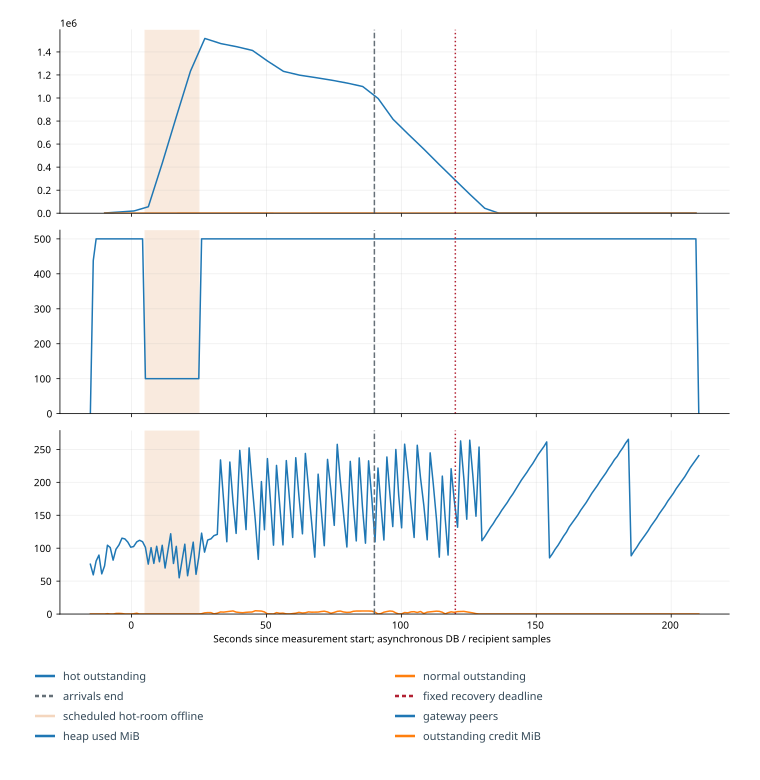
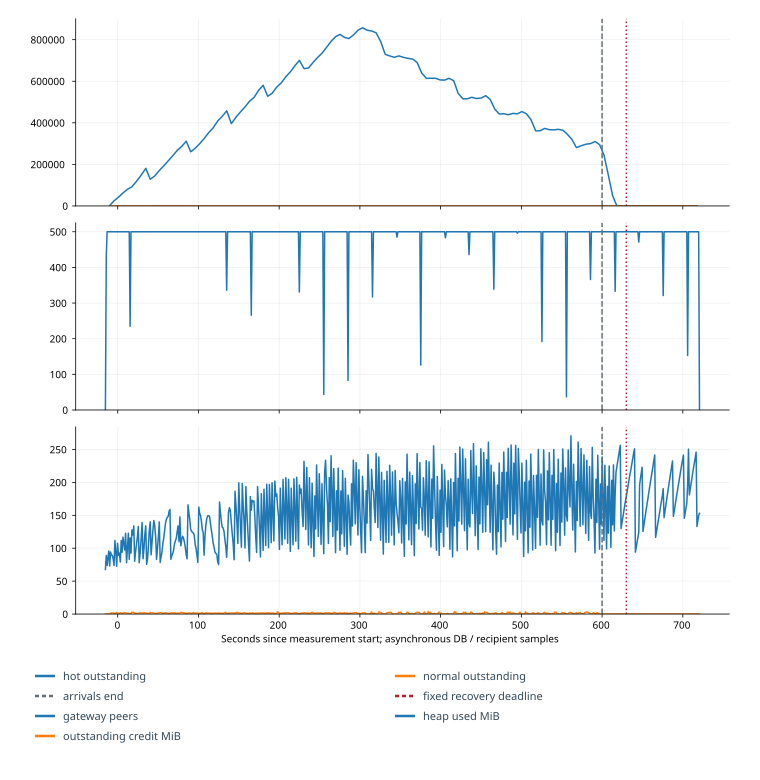
SQL·JFR 진단 자료
| thread | top frame | samples |
|---|---|---|
| http-nio-127.0.0.1-18080-Poller | org/apache/tomcat/util/net/NioEndpoint$Poller.timeout | 63 |
| outbox | java/lang/String.hashCode | 41 |
| room-read-0 | com/mysql/cj/util/StringInspector.indexOfNextChar | 34 |
| outbox | java/util/concurrent/locks/AbstractQueuedSynchronizer.enqueue | 25 |
| room-read-1 | com/mysql/cj/util/StringInspector.indexOfNextChar | 18 |
전체 SQL·프레임·관측값
실행 후 추출한 JFR·SQL 결과다. ExecutionSample은 스택 표본 수이며 CPU 점유율과 다르다. SQL 시간은 statement별 누적 시간이다.
JFR 상위 실행 프레임
| thread | top frame | samples |
|---|---|---|
| http-nio-127.0.0.1-18080-Poller | org/apache/tomcat/util/net/NioEndpoint$Poller.timeout | 63 |
| outbox | java/lang/String.hashCode | 41 |
| room-read-0 | com/mysql/cj/util/StringInspector.indexOfNextChar | 34 |
| outbox | java/util/concurrent/locks/AbstractQueuedSynchronizer.enqueue | 25 |
| room-read-1 | com/mysql/cj/util/StringInspector.indexOfNextChar | 18 |
| outbox | java/util/HashMap.getNode | 17 |
| peer-clock | java/util/TreeMap.getFirstEntry | 17 |
| http-nio-127.0.0.1-18080-Poller | org/apache/tomcat/util/net/NioEndpoint$Poller.events | 16 |
| room-read-0 | java/util/concurrent/locks/AbstractQueuedSynchronizer.signalNext | 14 |
| room-read-0 | java/util/HashMap.getNode | 13 |
| http-nio-127.0.0.1-18080-Poller | java/util/concurrent/ConcurrentHashMap$Traverser.advance | 13 |
| Catalina-utility-1 | org/apache/coyote/AbstractProtocol.lambda$startAsyncTimeout$0 | 13 |
| outbox | dev/storybridge/Gateway.issue | 13 |
| outbox | java/util/concurrent/ConcurrentHashMap.computeIfAbsent | 13 |
| room-read-0 | java/util/concurrent/ConcurrentHashMap.computeIfAbsent | 13 |
| outbox | dev/storybridge/Gateway.publish | 12 |
| room-read-1 | java/util/concurrent/locks/AbstractQueuedSynchronizer.signalNext | 11 |
| outbox | java/util/concurrent/locks/AbstractQueuedSynchronizer.signalNext | 11 |
| room-read-1 | java/util/HashMap.getNode | 10 |
| outbox | dev/storybridge/Metrics.add | 9 |
| MySQL Statement Cancellation Timer | java/util/TimerThread.mainLoop | 8 |
| room-read-1 | java/lang/String.hashCode | 8 |
| room-read-0 | dev/storybridge/Metrics.add | 8 |
| socket-writer-41bb5846-b095-4dff-bd5a-1a219be0a0c3 | java/lang/String.checkIndex | 7 |
| http-nio-127.0.0.1-18080-Poller | java/util/concurrent/locks/AbstractQueuedSynchronizer.signalNext | 7 |
MySQL statement별 누적 비용
| statement | calls | total ms | lock ms | examined |
|---|---|---|---|---|
| COMMIT | 9632 | 44903.37 | 0.0 | 0 |
| SELECT `r` . `head` , `r` . `floor_seq` , `m` . * FROM `room` `r` JOIN `membership` `a` ON `a` . `room_id` = `r` . `id` AND `a` . `user_id` = ? LEFT JOIN `message` `m` ON `m` . `room_id` = `r` . `id` AND `m` . `seq` > `GREATEST` ( ? , `r` . `floor_seq` - ? ) AND `m` . `seq` <= `LEAST` ( ? , `r` . `head` ) WHERE `r` . `id` = ? ORDER BY `m` . `seq` LIMIT ? | 9533 | 12551.47 | 62.0 | 207766 |
| SELECT `r` . `id` , `r` . `head` , LEFT ( `r` . `last_body` , ? ) , `m` . `read_seq` FROM `membership` `m` JOIN `room` `r` ON `r` . `id` = `m` . `room_id` WHERE `m` . `user_id` = ? AND `r` . `id` > ? ORDER BY `r` . `id` LIMIT ? | 10421 | 8516.09 | 41.71 | 129165 |
| SET `autocommit` = ? | 19285 | 5764.38 | 0.0 | 0 |
| SELECT COUNT ( * ) FROM `outbox` WHERE `room_id` = ? AND `state` != ? | 6201 | 4711.16 | 17.07 | 34174 |
| INSERT INTO `message` VALUES (...) | 6205 | 4130.58 | 17.64 | 0 |
| UPDATE `room` SET `head` = ? , `last_body` = ? WHERE `id` = ? | 6203 | 4116.76 | 22.76 | 6205 |
| SELECT `r` . `head` , `r` . `floor_seq` FROM `room` `r` JOIN `membership` `a` ON `a` . `room_id` = `r` . `id` AND `a` . `user_id` = ? WHERE `r` . `id` = ? | 7501 | 3913.21 | 59.79 | 7502 |
| SELECT COUNT ( * ) FROM `membership` WHERE `room_id` = ? AND `user_id` = ? | 6704 | 3522.95 | 32.59 | 6703 |
| INSERT INTO `send_receipt` VALUES (...) | 6204 | 3442.41 | 17.21 | 0 |
| INSERT INTO `outbox` ( `room_id` , `seq` ) VALUES (...) | 6205 | 3349.25 | 18.34 | 0 |
| SELECT * FROM `send_receipt` WHERE `room_id` = ? AND `sender_id` = ? AND `client_key` = ? | 6205 | 3112.99 | 20.66 | 0 |
| SELECT `head` FROM `room` WHERE `id` = ? FOR UPDATE | 6204 | 2899.06 | 18.4 | 6205 |
| UPDATE `outbox` SET `state` = ? , `lease_until` = ? , `last_error` = ? WHERE `state` = ? AND `lease_token` = ? AND `id` IN (...) | 1074 | 1925.65 | 5.67 | 6205 |
| SELECT `id` , `room_id` , `seq` , `attempts` FROM `outbox` WHERE ( ( `state` = ? AND `next_attempt` <= ? ) OR ( `state` = ? AND `lease_until` < ? ) ) ORDER BY `id` LIMIT ? FOR UPDATE SKIP LOCKED | 1865 | 1558.62 | 7.71 | 12410 |
| UPDATE `outbox` SET `state` = ? , `lease_token` = ? , `lease_until` = ? , `attempts` = `attempts` + ? WHERE `id` IN (...) | 1074 | 1358.65 | 3.22 | 6205 |
| SELECT `o` . `id` AS `outbox_id` , `o` . `lease_token` , `m` . * FROM `outbox` `o` JOIN `message` `m` ON `m` . `room_id` = `o` . `room_id` AND `m` . `seq` = `o` . `seq` WHERE `o` . `state` = ? AND `o` . `id` IN (...) | 1074 | 1060.35 | 6.09 | 12381 |
| SELECT `head` , `floor_seq` FROM `room` WHERE `id` = ? | 498 | 91.75 | 0.64 | 500 |
| SELECT @@SESSION . `transaction_isolation` | 500 | 62.71 | 0.0 | 500 |
| SET SESSION TRANSACTION READ ONLY | 500 | 52.08 | 0.0 | 0 |
당시 진단에서 수집한 SQL·프로파일·관측값이다. 전체 결과는 아래 상세 자료에서 확인할 수 있다.

SQL·JFR 진단 자료
SELECT r.head,r.floor_seq,m.* FROM room r JOIN membership a ON a.room_id=r.id AND a.user_id=%s LEFT JOIN message m ON m.room_id=r.id AND m.seq>GREATEST(%s,r.floor_seq-1) AND m.seq<=LEAST(%s,r.head) WHERE r.id=%s ORDER BY m.seq LIMIT 64 Parameters: [2, 5493, 5525, 999]
전체 SQL·프레임·관측값
부하 시험 이후 수행한 읽기 전용 진단이다. 구현 SQL과 실제 파라미터를 대조했으며 본 부하의 지연 측정과는 구분한다.
Source
SELECT r.head,r.floor_seq,m.* FROM room r JOIN membership a ON a.room_id=r.id AND a.user_id=%s LEFT JOIN message m ON m.room_id=r.id AND m.seq>GREATEST(%s,r.floor_seq-1) AND m.seq<=LEAST(%s,r.head) WHERE r.id=%s ORDER BY m.seq LIMIT 64 Parameters: [2, 5493, 5525, 999]
-> Limit: 64 row(s) (actual time=0.104..0.123 rows=32 loops=1)
-> Sort: m.seq, limit input to 64 row(s) per chunk (actual time=0.102..0.118 rows=32 loops=1)
-> Stream results (cost=6.7 rows=32) (actual time=0.0286..0.0717 rows=32 loops=1)
-> Nested loop left join (cost=6.7 rows=32) (actual time=0.0223..0.0499 rows=32 loops=1)
-> Rows fetched before execution (cost=0..0 rows=1) (actual time=0.0021..0.0021 rows=1 loops=1)
-> Filter: ((m.room_id = 999) and (m.seq > <cache>(greatest(5493,('1' - 1)))) and (m.seq <= <cache>(least(5525,'5525')))) (cost=6.7 rows=32) (actual time=0.0163..0.0421 rows=32 loops=1)
-> Index range scan on m using PRIMARY over (room_id = 999 AND 5493 < seq <= 5525) (cost=6.7 rows=32) (actual time=0.0147..0.0363 rows=32 loops=1)
당시 진단에서 수집한 SQL·프로파일·관측값이다. 전체 결과는 아래 상세 자료에서 확인할 수 있다.
250 SEND/s 혼합 부하와 동일 로그 복구 비교
| 소스 / 조건 | 독립 반복 | 성공 저장/s | 정상 방 p99 ms | STORED p99 ms | 미확정 합계 | drop 합계 | 최종 미완료 합계 |
|---|---|---|---|---|---|---|---|
| 수신 버퍼 개선 / 인기·일반 혼합 250/s | 3 | 78.8–82.5 | 326.0–433.0 | 182.0–207.2 | 0 | 0 | 0 |
| 수신 버퍼 개선·단계 계측 / 인기·일반 혼합 250/s | 3 | 74.9–85.7 | 263.6–415.0 | 168.6–227.1 | 0 | 0 | 0 |
| 소켓 쓰기 배치 / 인기·일반 혼합 250/s | 3 | 82.4–88.0 | 269.5–317.0 | 164.2–195.0 | 0 | 0 | 0 |
| 수신 버퍼 개선·단계 계측 / 다수 고유 사용자 250/s | 3 | 136.0–185.2 | 58.0–107.0 | 16.0–48.0 | 0 | 0 | 0 |
| 소켓 쓰기 배치 / 다수 고유 사용자 250/s | 3 | 144.3–213.0 | 52.0–80.0 | 14.0–32.0 | 0 | 0 | 0 |
| 수신 버퍼 개선·단계 계측 / 방 분산 1000/s | 3 | 273.7–287.1 | 361.0–381.0 | 260.0–270.0 | 83 | 0 | 0 |
| 소켓 쓰기 배치 / 방 분산 1000/s | 3 | 293.9–315.6 | 344.0–379.0 | 234.0–252.0 | 143 | 0 | 0 |
좁은 화면에서는 표를 좌우로 이동할 수 있습니다. 수치와 단위는 원본의 반복별 값을 유지했습니다.
범위는 실행별 값의 최솟값–최댓값이다. 실행별 p99 평균을 전체 표본의 p99 로 부르지 않는다. 수신 버퍼 개선·단계 계측은 원래 수신 버퍼 개선에 원인별 계측과 공통 HTTP 수정을 적용한 대조군이다. 수신 버퍼 개선 행은 같은 HTTP 수정만 적용한 계측 비용 대조다. 소켓 쓰기 배치는 단일 statement 조회·표현 재사용·유한 socket batch를 통합했다. 동일한 서버 총 CPU quota, 최대 heap768MiB, MySQL buffer256MiB, credit32MiB와 표현 cache16MiB를 유지한다.
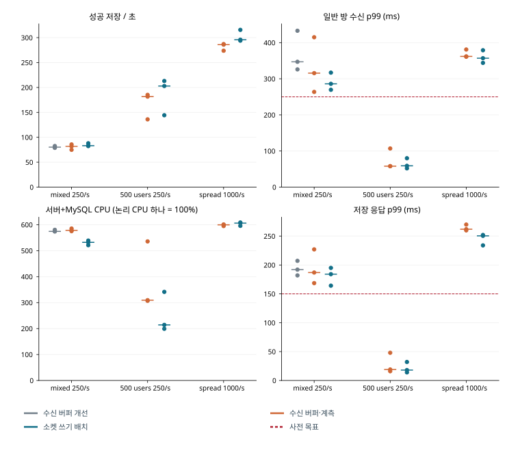
소켓 쓰기 배치는 통합 변경의 효과다. 단일 SELECT 복구/직렬화 prefix 재사용의 짧은 pilot은 가설 판별 자료이며 최종 수신 버퍼 개선·단계 계측/소켓 쓰기 배치 반복의 이득을 세 변경의 독립 효과로 분해하지 않는다. 수신 버퍼 개선 무계측 대조에서도 변동이 있어 계측 오버헤드를 정확한 비율로 확정하지 않는다. 주요 전후 비교는 같은 계측의 수신 버퍼 개선·단계 계측/소켓 쓰기 배치이며, 프로파일을 켠 진단 실행과 프로파일 없이 고정한 본 반복도 구분한다.
쓰기 permit6 개는 SEND·READ·retention 업무 진입의 제한이다. outbox publisher는 별도 단일 worker와 최대 32 개 SQL batch이며 같은 Hikari pool12 개를 공유한다. 조회 permit4 개와 공유 reader2 개도 구분한다. JVM 최대 heap와 DB buffer pool 설정을 전체 프로세스 RSS의 하드 상한이라고 부르지 않는다. 실제 RSS·k6·호스트 사용량은 원본 자원 표본과 함께 보고한다.
입력률별 수락률·지연과 재접속 결과
동일 혼합 분포에서 전체 저장 수락률 95% 가정까지 충족한 최고 확인 입력률은 지속 연결의 초당 45건이었다(120초, 독립 3회). 초당 50건은 2회 통과하고 1회 실패했다. 반면 초당 45건으로 600초 동안 전체 연결을 반복 재접속시킨 별도 시험에서는 일반 방 수신 p99가 336.54ms로 상한 250ms를 넘었다. 재접속 10,000회 중 782회는 다음 단절 전까지 복구를 마치지 못했다. 지속 연결에서의 통과를 반복 재접속 조건까지 적용할 수는 없었다.
지속 연결 45/s는 전체 수락 96.33~96.95%, 일반 방 수락 100%, STORED p99 47~50.65ms, 일반 방 p99 119~130.16ms였다. 일반 방 전체 SEND 중 저장 후 예정 수신자 전원이 250ms 안에 받은 비율은 99.8148~100%다. 검증 범위는 이 장비·분포·하네스의 해당 입력률이다.
50/s의 전체 수락은 94.33~95.73%로 한 반복이 사전 가정 95%를 밑돌았다. 55/s와 60/s는 각각 3 회 모두 전체 수락 기준에 미달했다. 하지만 60/s에서도 일반 방 수락은 100%, 일반 방 p99 는 161.49~174.94ms였다. 따라서 45/s를 정상 방 자체의 물리적 처리 한계라고 부르지 않는다. 확인 반복의 거절은 인기 방 ROOM_BUSY와 소수 ROOM_RELEASE_RACE였고 전체 WRITE_BUDGET·stripe 충돌·outbox 포화로 기록된 거절은 없었다.
600 초 45/s는 실제 27,000 시도 중 26,238 건이 당시 STORED로 확인됐다. 인기 방 21,600 시도/20,838 저장/762 거절, 일반 방 5,400 시도/5,400 저장/0 거절이며 미확정과 발생기 drop은 0 이다. STORED p99 는 44ms, 일반 방 p99 는 336.54ms, 일반 SEND→모든 예정 수신자 250ms 비율은 97.46296%다. 수신 지연은 단절 중 시작해 재접속 후 도착한 메시지도 포함한다.
측정 중 재접속 10,000 회에서 9,218회가 READY 시점에 고정한 방의 목표 순번 H까지 연속 수신했고 782회는 다음 주기 단절 전에 그 순번까지 복구하지 못했다. 실패 782 회는 전부 느린 인기 방 수신자다(해당 집단 2,000 회 중 782 회). 일반 방 2,000 회는 모두 완료됐고 최대 1.522 초였지만, 완료 표본의 전체 p99 가 26.049 초로 30 초보다 짧아도 실패 회차를 포함한 복구 목표는 실패다. 초기 500 회·워밍업 0 회·추가 관측 2,000 회도 원장과 별도 분모에 남겼다. 실제 연결 자체 실패는 이번 지속 실행에서 0 회이며 해당 상태는 k6 추적기 사례 시험으로도 확인했다.
느린 제한 중 실제 인기 방 저장 34.7825/s와 수신자당 연속 수신 23.6814/s의 차이 때문에 100 명 잔량은 약 1,110.1 건/s 증가했다. 전량 수락 36/s와 설정상 최대 25/s로 계산한 1,100 건/s는 별도의 요구량 계산이다. 실패 회차는 측정 75.105~285.612 초에 시작해 105.003~315.321 초에 H 도달 전 닫혔다. 제한은 계획상 측정 300 초에 해제된다. 전체 8,494,918 건 의무는 최종 전량 완료했고 마지막 수신은 신규 송신 종료+22ms였다. 회차 복구 시간과 이 잔량 해소 시간은 서로 다른 원점이다.
지연 표본을 모두 포함하고 기존 재시도 대기 범위(100~599ms)를 유지해 평가했다. 전체 연결이 30초마다 재접속하는 조건에서는 초당 20·25·30건 모두 일반 방의 수신 지연 목표를 충족하지 못했다(각 120초, 독립 3회). 초당 20건에서는 전량 수락하고 복구도 완료했지만 일반 방 수신 p99는 277.45~296.37ms로 상한 250ms를 넘었다. 별도의 600초 지속 시험에서 250ms를 넘긴 일반 방 수신 229건 중 226건은 해당 연결의 재접속 시도 전후 1초 안에 시작했다. 이는 시간상 연관이며 재접속만이 원인이라는 증명은 아니다. 이 전체 재접속 조건에서 통과 입력률은 확인하지 못했고, 초당 20건 미만은 측정하지 않았다.
모든 유효 확인 반복과 지속 시험에서 발생기 drop·SEND 미확정·최종 수신 미완료는 0 이었다.45/s 지속 시험의 실제 도착률은 45/s, 발생 지연 p99 는 17.56ms다. 서버 스택 CPU 평균 2.72 개 논리 CPU 시간, k6 는 4.60 개였고 호스트 최소 여유 메모리는약 4,342MiB였다. 발생기 drop으로 실패한 경계는 아니지만 공유 호스트·이벤트 루프 지연과 서버 비용을 완전히 분리한 물리 용량 결과도 아니다.
입력률 경계 탐색에서는 소켓 쓰기 배치 구현을 그대로 사용했다. 기존 601,000 건 복구의 CPU 절감, 유한 저장 대기 후보의 효과와 기각 이유, 기존 250/s 실패와 정확성 회귀는 원본 재사용임을 표시한다. 이번 새 계측의 첫 receipt wrapper 해석 오류는 실패 실행으로 보존했고 수정 후 최종 부하 하네스를 고정했다. 새 서버 정합성 결함은 발견하지 않았다. 새로운 32 실행 중 1 개 계측 실패를 유효 성능 실험으로 세지 않는다.
이 입력률 경계는 소켓 쓰기 배치 구현에서 확인했다. 500 개 수신 연결 중 인기 방은 400 개, 일반 방은 100 개이며 인기 방의 100 개 연결에 40ms 적용 제한을 걸었다. 31 명 고유 사용자의 다중 탭이고, 입력의 80%는 인기 방·20%는 31 개 일반 방이다. HTTP SEND 본문 512byte, gateway+MySQL CPU quota 3333/10000, heap 768MiB·DB buffer 256MiB·credit 32MiB·표현 cache 16MiB·k6 송신 VU 512 를 유지했다. 입력률을 낮춘 결과를 250/s 성능 개선으로 부르지 않는다.
실험 전 판정 가정: 기존 최소 수락률이 없어 이번에는 전체 95%·일반 방 99% 이상을 요구했다. 기존 STORED p99≤150ms, 일반 방 수신 p99≤250ms, 재접속 복구 30 초는 그대로다. 수락률은 논리 SEND 중 당시 STORED/동일 키 결과가 확인된 비율이다. 사후 DB 확인을 당시 응답 성공으로 바꾸지 않는다.
지속 연결: 원래 혼합 주 비교와 같은 조건
| 실행 | 목표 / 실제 SEND · 실제/s | drop 워밍업 / 측정 | 수락 전체 / 일반 | p99 STORED / 일반 ms | 일반 SEND→모두 250ms | 미확정 / 최종 미완료 | 판정 |
|---|---|---|---|---|---|---|---|
| 45/s · 120 초 · #1 | 5400 / 5401 · 45.01 | 0/0 | 96.33% / 100.00% | 48.0 / 121.1 | 99.81% | 0 / 0 | 통과 |
| 45/s · 120 초 · #2 | 5400 / 5400 · 45.00 | 0/0 | 96.87% / 100.00% | 47.0 / 130.2 | 99.81% | 0 / 0 | 통과 |
| 45/s · 120 초 · #3 | 5400 / 5401 · 45.01 | 0/0 | 96.95% / 100.00% | 50.6 / 119.0 | 100.00% | 0 / 0 | 통과 |
| 50/s · 120 초 · #1 | 6000 / 6001 · 50.01 | 0/0 | 95.70% / 100.00% | 50.0 / 135.0 | 100.00% | 0 / 0 | 통과 |
| 50/s · 120 초 · #2 | 6000 / 6001 · 50.01 | 0/0 | 94.33% / 100.00% | 57.0 / 137.2 | 99.92% | 0 / 0 | 실패: 전체 수락률 |
| 50/s · 120 초 · #3 | 6000 / 6001 · 50.01 | 0/0 | 95.73% / 100.00% | 51.0 / 145.8 | 99.83% | 0 / 0 | 통과 |
좁은 화면에서는 표를 좌우로 이동할 수 있습니다. 수치와 단위는 원본의 반복별 값을 유지했습니다.
전체 연결 재접속: 일반 방 자체의 단절도 포함
| 실행 | 목표 / 실제 SEND · 실제/s | drop 워밍업 / 측정 | 수락 전체 / 일반 | p99 STORED / 일반 ms | 일반 SEND→모두 250ms | 미확정 / 최종 미완료 | 판정 |
|---|---|---|---|---|---|---|---|
| 20/s · 120 초 · #1 | 2400 / 2400 · 20.00 | 0/0 | 100.00% / 100.00% | 12.0 / 283.0 | 98.33% | 0 / 0 | 실패: 일반 방 지연 |
| 20/s · 120 초 · #2 | 2400 / 2400 · 20.00 | 0/0 | 100.00% / 100.00% | 13.0 / 277.5 | 98.33% | 0 / 0 | 실패: 일반 방 지연 |
| 20/s · 120 초 · #3 | 2400 / 2400 · 20.00 | 0/0 | 100.00% / 100.00% | 14.0 / 296.4 | 98.33% | 0 / 0 | 실패: 일반 방 지연 |
| 45/s · 600 초 · #1 | 27000 / 27000 · 45.00 | 0/0 | 97.18% / 100.00% | 44.0 / 336.5 | 97.46% | 0 / 0 | 실패: 일반 방 지연, 회차 복구 30 초 |
좁은 화면에서는 표를 좌우로 이동할 수 있습니다. 수치와 단위는 원본의 반복별 값을 유지했습니다.
실행 표기의 입력률·측정시간·반복 번호는 각 원본으로 연결된다. 전체 원본 식별자와 발생 지연은 실행 부록에 있다. 수락률·지연·SEND 미확정은 측정 구간에 시작한 SEND 기준이다. 최종 수신 미완료는 워밍업을 포함한 전체 DB 저장 의무를 추가 관측 종료 때 감사한 값이다. 지속 연결의 재접속 복구 목표는 해당 없음이며, 송신 종료 후 잔량 해소 30 초는 별도로 검사했다.
원래 250/s 주 비교는 churn=0, 이전 600 초 지속 시험은 churn=30 이었다. 이번 초기 경계 확인은 짧은 시험에도 churn=30 을 적용했다. 그 실패를 그대로 남기고 원래 지속 연결 시나리오를 별도로 측정했다. 지속 연결 통과는 반복 재접속 시나리오의 통과를 뜻하지 않는다. 각 p99 는 해당 실행의 완료 표본이며 반복의 평균 p99 가 아니다. 수신 지연에는 측정 중 시작한 SEND의 재접속 후 replay도 포함한다. 일반 방의 전체 SEND→모두 250ms 비율은 거절·미확정을 분모에서 빼지 않으며, 독립 방/수신자 계획과 DB seq를 연결해 모든 예정 연결의 첫 연속 수신 시각을 대조했다. k6 메모리 수신이며 SQLite/IndexedDB 영속 commit 지표가 아니다.
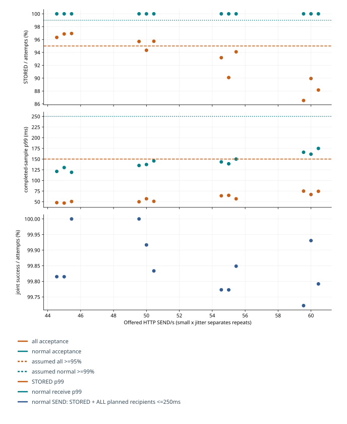
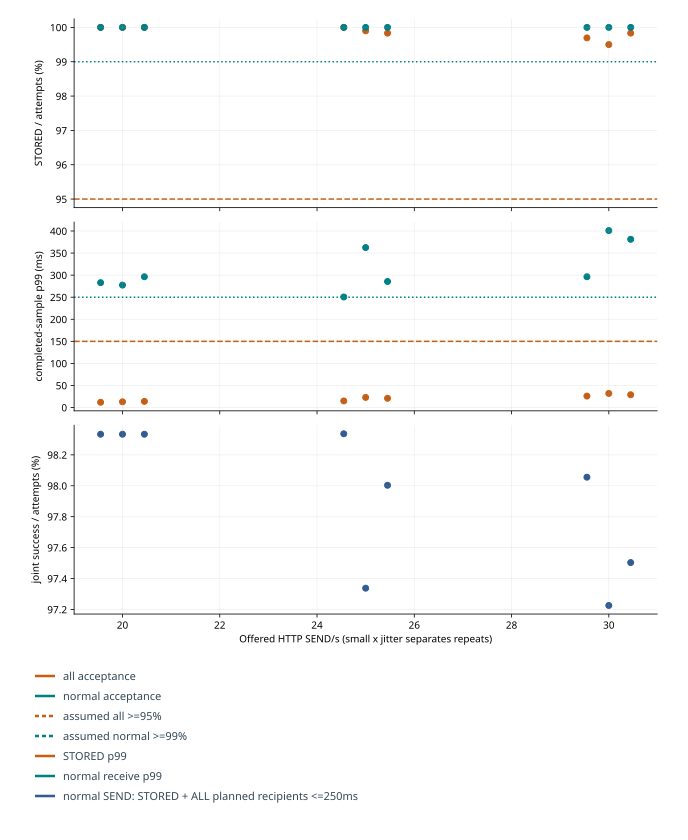
회차별 재접속 복구와 송신 종료 후 잔량 해소
연결 index와 물리 재접속 round를 키로 WebSocket 생성 직전 attemptAt, 첫 READY 수신 readyAt, 그 READY의 고정 head H, 연속 cursor가 H에 도달한 reachedAt을 묶었다. READY 때 cursor≥H이면 그 시각에 완료한다. 연결 오류·H 도달 전 재단절·시험 종료는 완료로 바꾸지 않으며, 다음 재접속이 성공해도 이전 회차의 실패는 유지한다.
30 초 복구 판정은 측정 구간에 시작한 모든 재접속에서 attemptAt→reachedAt이다. 초기·워밍업·추가 관측 회차도 별도 집계와 원장에 전부 남는다. 미완료 회차를 제외한 p99 만으로 통과시키지 않는다. 신규 송신 종료 후 전체 잔량 해소는 예정 유입 종료 시각부터 마지막 실제 수신까지로, 서로 다른 원점이다. 서버 READY의 H는 그 시점 snapshot이며 도중 새 메시지가 들어와도 해당 회차 목표를 움직이지 않는다.
| 회차별 원장 | 측정재접속 / 완료 / 실패 | 완료 p99 / 최대 ms | 일반 / slow 최대 ms | READY 즉시완료 | 유입종료+30 초 미완료 | 전체 잔량 해소 초 |
|---|---|---|---|---|---|---|
| 20/s · 120 초 · #1 | 2000 / 2000 / 0 | 434.1 / 474.0 | 128.0 / 474.0 | 375 | 0 | 0.0 |
| 20/s · 120 초 · #2 | 2000 / 2000 / 0 | 465.0 / 533.0 | 135.0 / 533.0 | 375 | 0 | 0.0 |
| 20/s · 120 초 · #3 | 2000 / 2000 / 0 | 461.0 / 492.0 | 139.0 / 492.0 | 374 | 0 | 0.0 |
| 45/s · 600 초 · #1 | 10000 / 9218 / 782 | 26,048.7 / 28,900.0 | 1,522.0 / 28,900.0 | 1675 | 0 | 0.0 |
좁은 화면에서는 표를 좌우로 이동할 수 있습니다. 수치와 단위는 원본의 반복별 값을 유지했습니다.
아래 셀은 전체 회차 / 미완료 또는 30 초 초과다. 초기 연결, 워밍업 재접속, 측정 재접속, 추가 관측 재접속을 분리했다. 0/0 은 시도 없음이며 복구 통과 증거가 아니다. 실패한 회차는 다음 회차가 성공해도 그대로 남는다.
| 실행 | 초기 연결 | 워밍업 재접속 | 측정 재접속 | 추가 관측 재접속 |
|---|---|---|---|---|
| 20/s · 120 초 · #1 | 500 / 0 | 0 / 0 | 2000 / 0 | 2000 / 0 |
| 20/s · 120 초 · #2 | 500 / 0 | 0 / 0 | 2000 / 0 | 2000 / 0 |
| 20/s · 120 초 · #3 | 500 / 0 | 0 / 0 | 2000 / 0 | 2000 / 0 |
| 45/s · 600 초 · #1 | 500 / 0 | 0 / 0 | 10000 / 782 | 2000 / 0 |
| 45/s · 120 초 · #1 | 500 / 0 | 0 / 0 | 0 / 0 | 0 / 0 |
| 45/s · 120 초 · #2 | 500 / 0 | 0 / 0 | 0 / 0 | 0 / 0 |
| 45/s · 120 초 · #3 | 500 / 0 | 0 / 0 | 0 / 0 | 0 / 0 |
| 50/s · 120 초 · #1 | 500 / 0 | 0 / 0 | 0 / 0 | 0 / 0 |
| 50/s · 120 초 · #2 | 500 / 0 | 0 / 0 | 0 / 0 | 0 / 0 |
| 50/s · 120 초 · #3 | 500 / 0 | 0 / 0 | 0 / 0 | 0 / 0 |
좁은 화면에서는 표를 좌우로 이동할 수 있습니다. 수치와 단위는 원본의 반복별 값을 유지했습니다.
아래는 45/s · 600 초 · #1의 실제 회차 예다. 시각은 측정 시작부터의 ms이며, 미완료 회차가 있는 실행의 사례만 표시했다.
| 연결 / 회차 | attempt / READY ms | 시도 cursor / READY cursor / 고정 H | 도달 ms | 종료 상태 |
|---|---|---|---|---|
| 360 / 11 | 315548 / 316860 | 95 / 95 / 95 | 316860 | caught_at_ready |
| 22 / 10 | 285185 / 285189 | 6998 / 6998 / 10288 | 314085 | caught_up |
| 4 / 10 | 285112 / 285118 | 7038 / 7038 / 10285 | 미완료 | closed_before_target |
좁은 화면에서는 표를 좌우로 이동할 수 있습니다. 수치와 단위는 원본의 반복별 값을 유지했습니다.
추적기는 최초 READY에서만 H를 고정하고 terminal 상태를 한 번만 기록하는 관측 하네스로, 서버의 STORED/credit 계약을 바꾸지 않는다.
// One immutable target per physical connection attempt. No cross-attempt success repair.
export function recoveryAttempt(meta, emit) {
const row={...meta,readyAt:null,head:null,cursorAtReady:null,reachedAt:null,endAt:null,outcome:null};
emit('RECOVERY_ATTEMPT', {...row});
function finish(outcome,at,cursor){if(row.outcome!==null)return;row.outcome=outcome;row.endAt=at;row.endCursor=cursor;emit('RECOVERY_END',{...row});}
return {
ready(head,at,cursor){if(row.outcome!==null||row.readyAt!==null)return;row.readyAt=at;row.head=head;row.cursorAtReady=cursor;emit('RECOVERY_READY',{...row});this.progress(at,cursor);},
progress(at,cursor){if(row.outcome===null&&row.head!==null&&cursor>=row.head){row.reachedAt=at;finish(row.cursorAtReady>=row.head?'caught_at_ready':'caught_up',at,cursor);}},
close(reason,at,cursor){finish(reason,at,cursor);},
error(at,cursor){if(row.readyAt===null)finish('connection_failed',at,cursor);}
};
}
시각은 같은 k6 프로세스의 Unix wall milliseconds다. 다른 프로세스 monotonic 원점을 같다고 가정하지 않는다. 30 초 주기 close 후 기존 100~599ms 재시도 지연도 기존 하네스 그대로이며, 재접속 지연 원점은 실제 시도 시각이다. 일반 메시지 지연은 원래 SEND부터이므로 연결 단절·재시도 대기도 포함한다. 느린 수신 제한은 측정 절반에서 해제하므로 120 초와 600 초의 backlog 조건은 다르다.
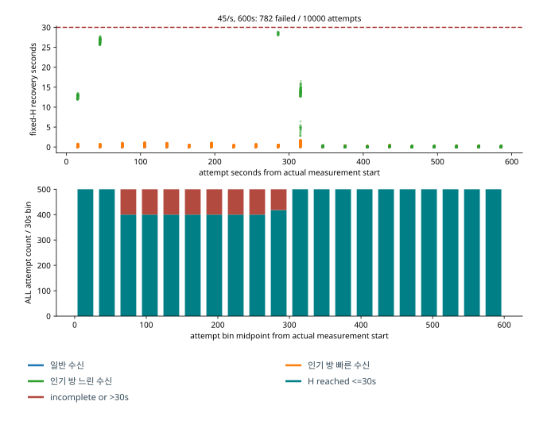
지속 시험의 느린 수신자와 자원 비용
소켓 쓰기 배치 / 혼합 45 건/초 · 600 초 / 반복 1: 전량 수락 시 인기 방은 36.0 SEND/s ×400 연결 = 14,400.0 의무/s, 일반 방은 약 29.0 의무/s다. 실제 저장량과 예정 의무는 방별 원본 집계에 별도로 있다.
느린 수신 제한이 유지된 k6 시작 기준 42.1~297.0 초 관측에서 실제 인기 방 저장은 34.8/s, 느린 연결당 연속 수신은 23.7/s였다. 100 연결 ×(저장률−수신률)로 분해한 잔량 증가 1,110.1 건/s는 관측 증가 1,110.1 건/s와 같다. 두 값은 같은 끝점 표본의 항등 관계이며 독립 예측 검증이 아니다. 전량 수락·설정상 최대 25 건/s만으로 계산한 증가량과 실제 저장·수신 속도를 구분한다. 5 초 간격 독립 DB/client 표본의 시차가 있으므로 순간 원자 snapshot이나 영속 commit 속도라고 부르지 않는다.
측정 구간 서버 CPU 평균은 2.7 개 논리 CPU 시간, k6 는 4.6 개였다. 서버 스택 RSS 최대 1,021.3MiB, k6 최대 979.6MiB, 호스트 최소 여유 4,342.4MiB였다. 한 호스트의 공유 자원이며 전용 코어·원격 확장성 결과가 아니다. 새 원장 계측 자체의 비용을 별도 무계측 대조로 정량 분리하지 않았고 모든 새 범위 비교에 동일하게 적용했다.
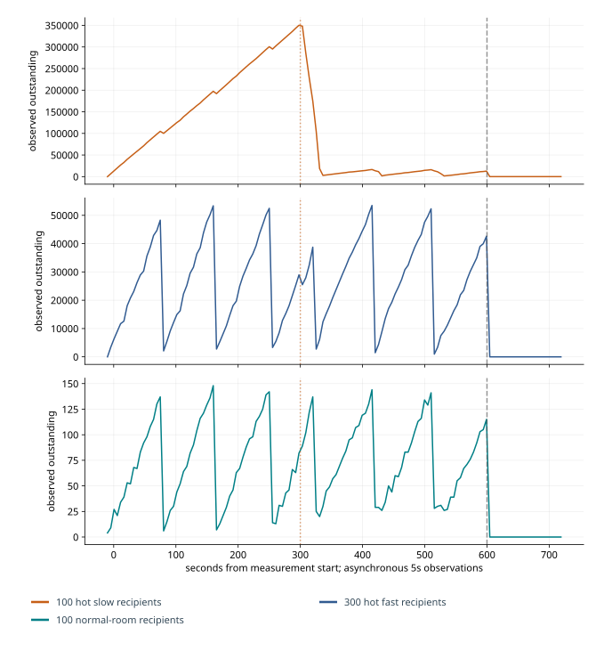
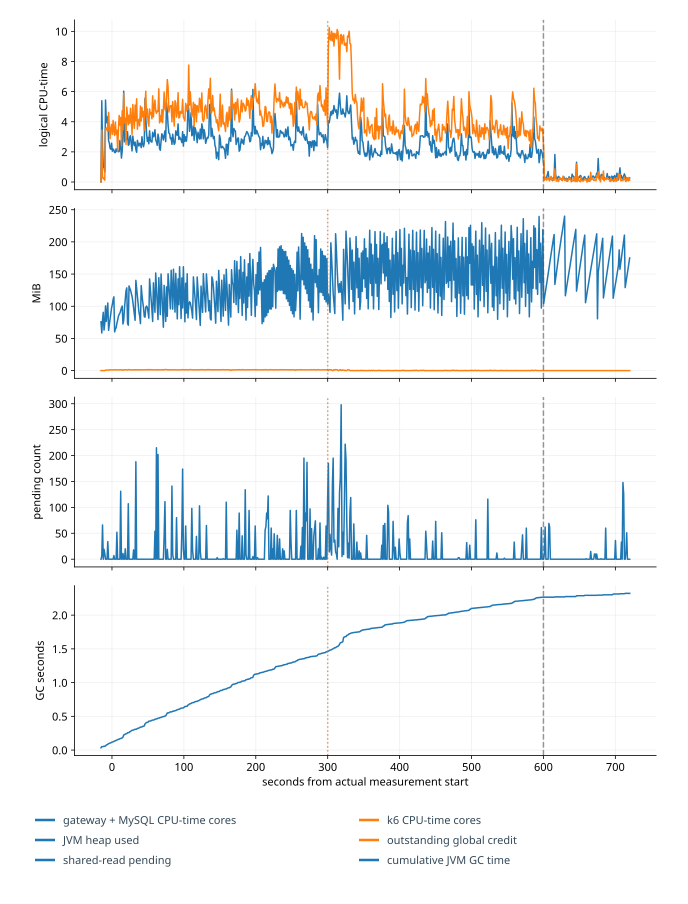
인기 방과 일반 방의 별도 분모
| 새 실행 | 방 | 시도 / 저장 / 거절 / 미확정 | 수락률 |
|---|---|---|---|
| 20/s · 120 초 · #1 | 인기 방 | 1920 / 1920 / 0 / 0 | 100.00% |
| 20/s · 120 초 · #1 | normal | 480 / 480 / 0 / 0 | 100.00% |
| 20/s · 120 초 · #2 | 인기 방 | 1920 / 1920 / 0 / 0 | 100.00% |
| 20/s · 120 초 · #2 | normal | 480 / 480 / 0 / 0 | 100.00% |
| 20/s · 120 초 · #3 | 인기 방 | 1920 / 1920 / 0 / 0 | 100.00% |
| 20/s · 120 초 · #3 | normal | 480 / 480 / 0 / 0 | 100.00% |
| 45/s · 600 초 · #1 | 인기 방 | 21600 / 20838 / 762 / 0 | 96.47% |
| 45/s · 600 초 · #1 | normal | 5400 / 5400 / 0 / 0 | 100.00% |
| 45/s · 120 초 · #1 | 인기 방 | 4320 / 4122 / 198 / 0 | 95.42% |
| 45/s · 120 초 · #1 | normal | 1081 / 1081 / 0 / 0 | 100.00% |
| 45/s · 120 초 · #2 | 인기 방 | 4320 / 4151 / 169 / 0 | 96.09% |
| 45/s · 120 초 · #2 | normal | 1080 / 1080 / 0 / 0 | 100.00% |
| 45/s · 120 초 · #3 | 인기 방 | 4320 / 4155 / 165 / 0 | 96.18% |
| 45/s · 120 초 · #3 | normal | 1081 / 1081 / 0 / 0 | 100.00% |
| 50/s · 120 초 · #1 | 인기 방 | 4800 / 4542 / 258 / 0 | 94.62% |
| 50/s · 120 초 · #1 | normal | 1201 / 1201 / 0 / 0 | 100.00% |
| 50/s · 120 초 · #2 | 인기 방 | 4800 / 4460 / 340 / 0 | 92.92% |
| 50/s · 120 초 · #2 | normal | 1201 / 1201 / 0 / 0 | 100.00% |
| 50/s · 120 초 · #3 | 인기 방 | 4800 / 4544 / 256 / 0 | 94.67% |
| 50/s · 120 초 · #3 | normal | 1201 / 1201 / 0 / 0 | 100.00% |
좁은 화면에서는 표를 좌우로 이동할 수 있습니다. 수치와 단위는 원본의 반복별 값을 유지했습니다.
기존 개선 근거와 이번 범위 판정의 연결
동일 601,000 건 복구의 CPU 절감은 처리할 의무를 맞춰 소켓 쓰기 배치의 작업당 비용 감소를 확인한 이전 실험이다. 짧은 저장 대기는 작은 방에서 불필요한 즉시 거절을 줄였지만 인기 방에서 수락 한 건마다 400 개 전달 의무를 더해 혼합 지연을 악화시켰다. 이번에는 소켓 쓰기 배치를 바꾸거나 저장 대기를 늘리지 않고, 그 비용 구조에서 정상 방 품질과 수락률을 함께 유지하는 입력 조건을 측정했다. 동일 로그 복구, 저장 대기, 입력률 경계는 별도 실험이므로 낮은 입력률의 통과와 기존 250/s의 실패를 각각 유지했다.
원본과 재현
새 측정과 기존 결과의 재사용 · 부하 범위 판정 · 탐색·실패 전체 표. 입력과 DB, 재접속 회차, 일반 방의 메시지별·수신자별 결과를 자원 시계열과 함께 대조했다. 하위 실행 실패·필수 원본 누락·정합성 오류는 시험 자체의 실패다. 정상적으로 측정했지만 성능 목표를 넘은 경우는 유효한 실패 실험으로 남겼다.
세부 측정 조건과 원본
반복별 전체 결과와 실패, 사전 목표·예산, 집계 원본을 연결했다. 분석에 사용한 소스·환경·명령은 재현 자료에서 확인할 수 있다.
공식 동작은 MySQL8.4 snapshot, Tomcat10.1.55 batch/flush 구현, Jakarta2.1 완료 의미, k6 2.3.0 error code와 실제 재현을 대조했다.
추가 실험 조건
StoryBridge는 고정 구성원의 1:1·소규모 채팅에서 저장 성공과 실제 수신을 구분한다. MySQL commit 뒤에만 STORED를 응답하고, 같은 키·본문의 재시도는 같은 receipt로 돌아간다. 연결이 끊기거나 느린 수신자가 있어도 연속 cursor와 내구 로그로 복구해야 한다. 이번 실험은 이 계약을 유지하며 인기 방의 작업이 정상 방을 지연시키는 이유를 찾는 후속 작업이다.
- 같은 계측의 수신 버퍼 개선·단계 계측과 소켓 쓰기 배치를 동일 CPU quota·heap·DB·credit 예산에서 비교했다. 원래 수신 버퍼 개선의 공통 HTTP 수정 대조도 3 회 남겼다.
- 권한·floor·head·본문을 단일 MySQL statement snapshot으로 조회해 반복 트랜잭션 설정 왕복을 줄였다. 불변 본문의 UTF-8 길이와 구독 prefix를 재사용하고, 기존 writer 큐에서 이미 대기 중인 최대 8 개 frame만 묶어 즉시 flush한다. 새로운 수집 지연·worker·credit 확대는 없다.
- 동일 로그의 독립 3 회에서 수신 버퍼 개선·단계 계측 서버 CPU177.25~196.92 초, 소켓 쓰기 배치 130.25~143.71 초였다. 중앙값 180.34→140.52 초, 서버+k6 중앙값 428.55→375.84 초다. MySQL Questions 중앙값 188930→70587 로 줄었지만 공유 snapshot은 13231→21271 로 늘었다. 더 빨리 처리해 병합 기회가 줄어든 비용과 물리 왕복 감소를 함께 보고한다.
- 혼합 부하의 성공 저장 중앙값은 수신 버퍼·단계 계측 81.78→소켓 쓰기 배치 83.12/s, 정상 방 p99 는 315.64→286ms였다. 범위가 겹치고 모든 반복에서 지연이 좋아진 것은 아니다. 동일 로그 비교는 적게 수락한 효과를 분리하는 보조 근거이며 live 송신 성능의 대체가 아니다.
- 500 개 고유 사용자·188 개 소규모 방에서도 소켓 쓰기 배치를 검증했다. 유한 저장 대기는 실제로 작은 방의 불필요한 즉시 거절을 줄였지만 혼합 정상 방 p99 를 298→323ms로 악화시켜 기본 채택하지 않았다. JDBC parse cache·초기 heap 증가는 pilot에서 전체 이득을 입증하지 못해 제외했다.
- 정상 HTTP의 100 회 keep-alive 종료와 abortive close가 결합한 응답 reset 경계는 기준 구현과 비교군에 공통 수정했다. 최종 혼합 3 회와 10 분 시험의 SEND 미확정은 0 이다. 고율 조건의 TCP 연결 거절은 별도의 남은 한계로 유지한다.
제약 사항
동일 로그 복구의 CPU 약 22% 감소는 이 단계의 통합 변경 결과다. 기준 구현과 최종 구현 전체의 개선율은 아니다. 250 SEND/s 혼합 부하에서는 저장·수신 지연 목표를 충족하지 못했다.